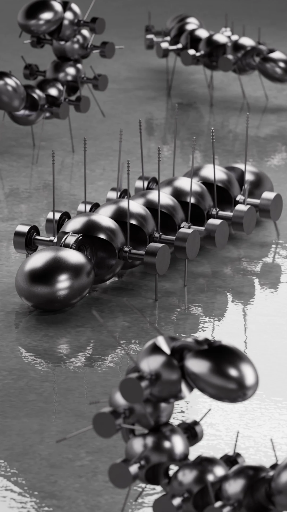
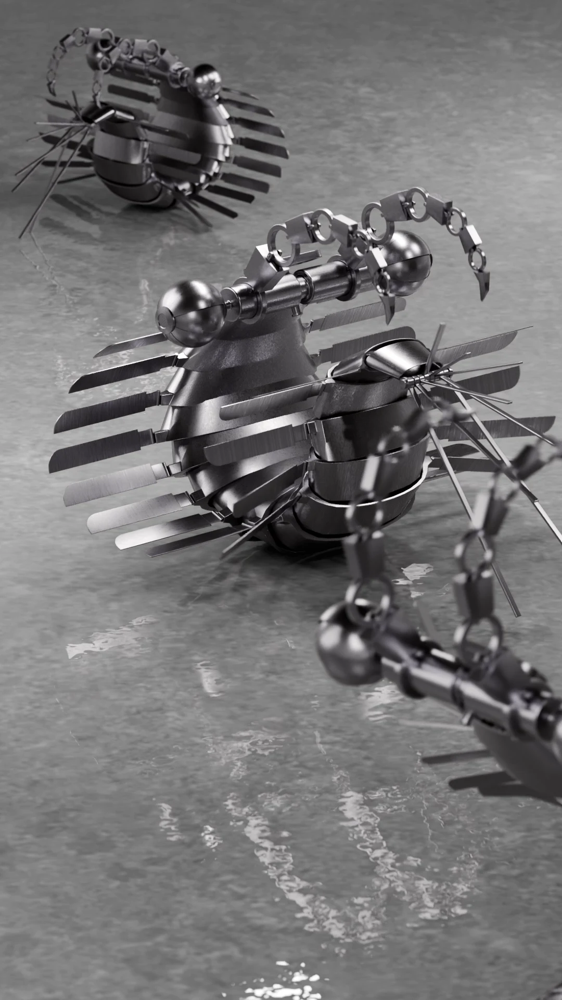
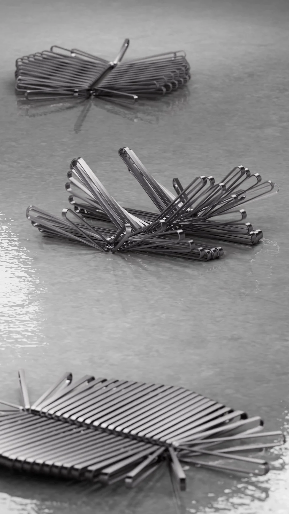

-Hallucigenia, Anomalocaris, Dickinsonia-
0.1도의 재조립
/
The Reassembly of 0.1 Degree
2025 / Single-channel video, color, sound / 1080 x 1920 (px), 00’ 09”, 00’ 10”, 00’ 14”
2025 / Single-channel video, color, sound / 1080 x 1920 (px), 00’ 09”, 00’ 10”, 00’ 14”
금속 로봇으로 재해석한 영상이다.
수억 년 전 생명체의 불완전한 파편인 화석은 과학자들의 섣부른 추측과 오해 속에서 수십 년간 왜곡된 모습으로 존재했다.
이 로봇들은 현대 과학이 찾아낸 본연의 모습을 바탕으로
“쇠”라는 성질을 이용해 재조립된 결과물이다.
작품 제목처럼, 진실은 화석의 각도나 구조에 대한
아주 미세한 관점의 전환을 통해 비로소 완성되었다.
고생물 화석은 깨지기 쉬운 유기물이었지만,
오해를 바로잡은 진실은 하나의 금속처럼 견고하다.
우리는 일상에서 가짜 뉴스, 섣부른 판단, 그리고 뿌리 깊은 편견에 둘러싸여 살아간다.
이로 인해 종종 이야기의 본질을 뒤집어 보거나, 파편으로 오해하고,
심지어 그 본질적인 가치를 잘못 판단하고 치부하기도 한다.
이 견고한 금속 구조물들은 침묵 속에서 당신에게 묻는다.
당신이 확신하는 그 사실이 혹시 0.1도만 비틀면 바로잡힐 수 있는 오해는 아닌지.
The incomplete fragments, or fossils, of creatures from hundreds of millions of years ago existed for decades in distorted forms amid scientists' premature conjecture and misunderstanding. These robots are the result of reassembly, based on the true forms uncovered by modern science and utilizing the properties of "steel."
As the title suggests, the truth was finally completed through a very subtle shift in perspective regarding the fossil's angle or structure.
Paleontological fossils were fragile organic matter, but the truth that corrected the misconception is as solid as metal.
In our daily lives, we live surrounded by fake news, hasty judgments, and deep-seated prejudice. Due to this, we often flip the essence of a story on its head, mistake it for fragments, and even misjudge and dismiss its fundamental value.
These robust metal structures ask you in silence:
Is the fact you are certain of perhaps a misunderstanding that could be corrected with just a 0.1-degree shift?
.



←